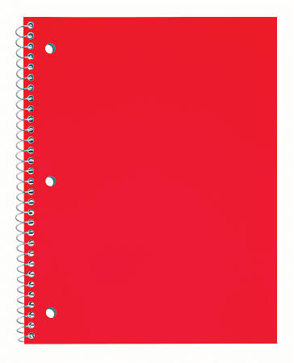
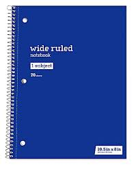
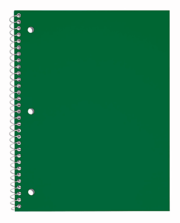
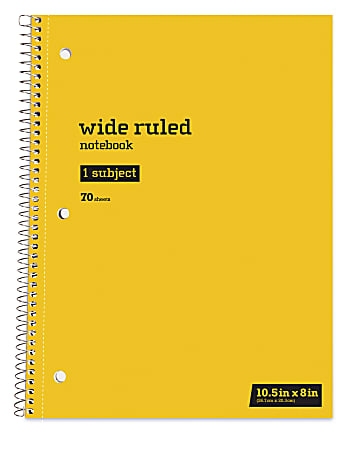

This is the homepage I'm writing as part of Project 1, yipee.
I'm not interesting enough to have a lengthy or comprehensive essay about anything regarding myself or what I'm involved with, so what's infinitely more interesting is what color notebook every school subject belongs to. Not every subject even needs a notebook, but for some of them I'll put a color anyway if I can think of one. All of my answers are completely, 100% true and objective, and I will not accept any rebuttals.

I always remember this being my favorite subject because I was always good at it. And also, depending on how lucky we were, we would do fun writing and/or read a good book. Naturally, by favorite subject should get my favorite color as its notebook, which is red.
Even if you couldn't justify this with it being my favorite color, you have to remember the saying"the pen is mightier than the sword." Of course, swords spill blood, blood is red, you use pens to write literature, and it all works out.

I don't necessarily dislike math, but in a lot of ways, it's the opposite of English. There's nothing to interpret about numbers that isn't already there. For that reason, it should be blue, which is the opposite of red, which also works out. How convenient.

Depending on how you interpret it, science is like an exploration of life. You figure out how living beings work in biology, what makes them up in chemistry, and how they move in physics. Even if that last one is arguably math, the theme is there. And what's the color of life? Green.

Yellow doesn't exactly have a lot of correlation with either history or government, but that's how process of elimination goes. The primary colors are already used, and yellow is practically an honorary primary color. That doesn't make sense, but it makes sense, right? Besides, history has a yellow vibe. Like aged gold, or something along those lines.